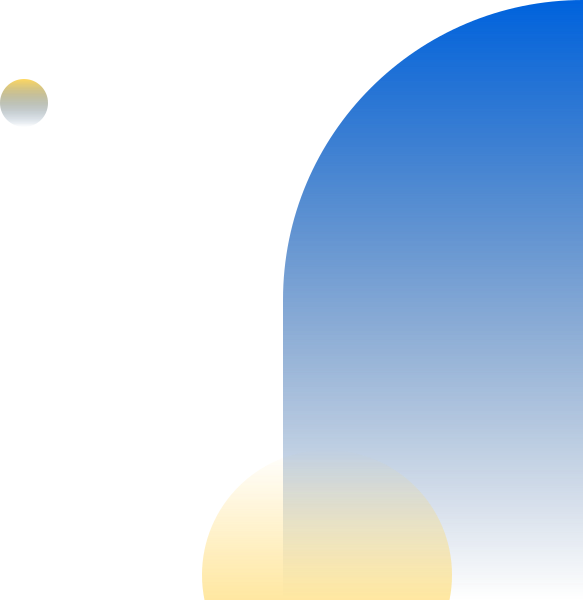
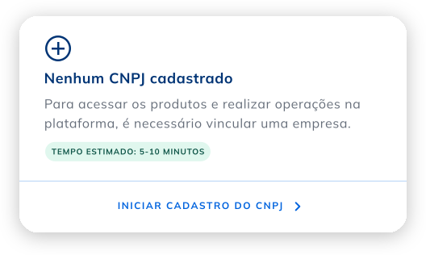
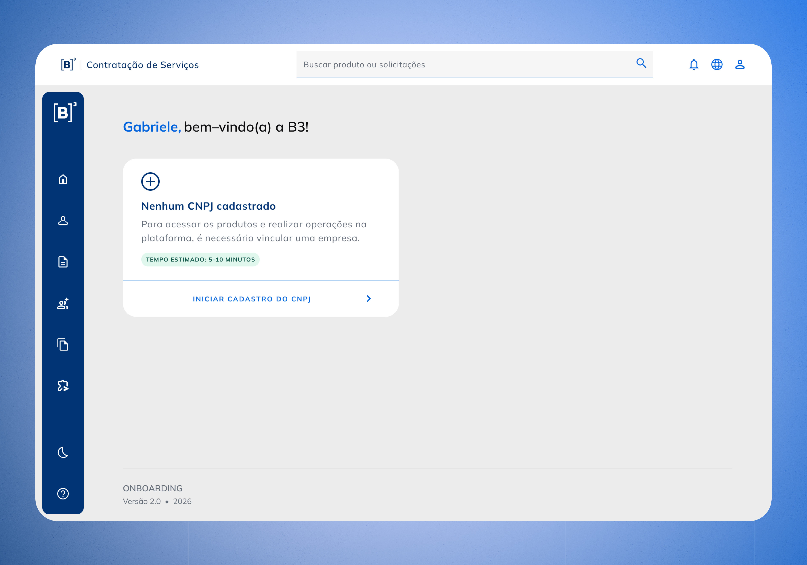
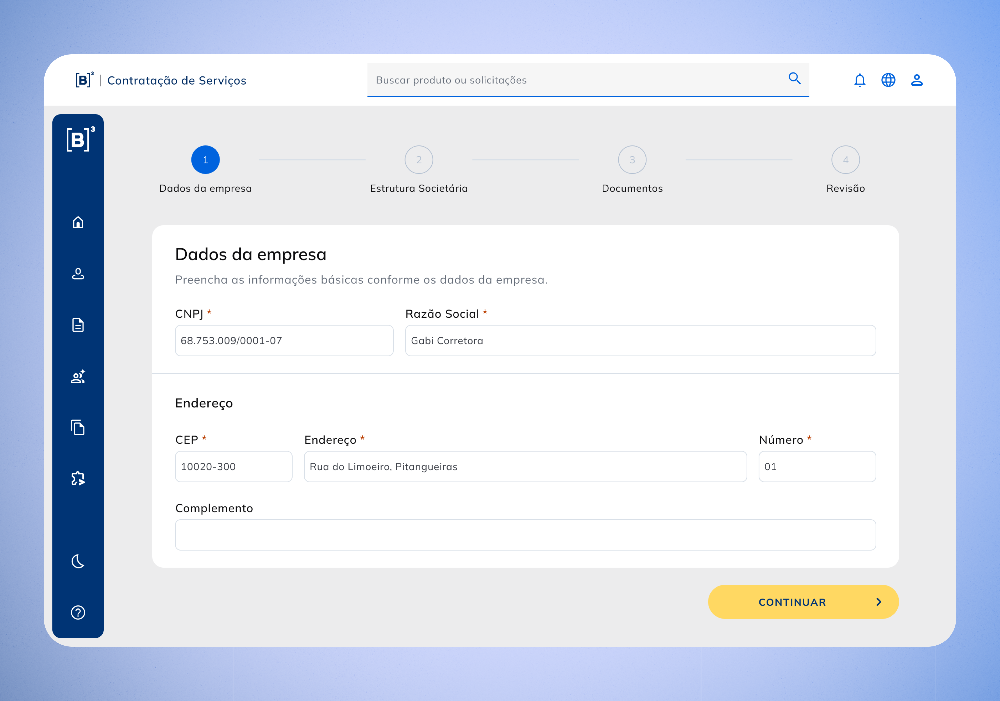
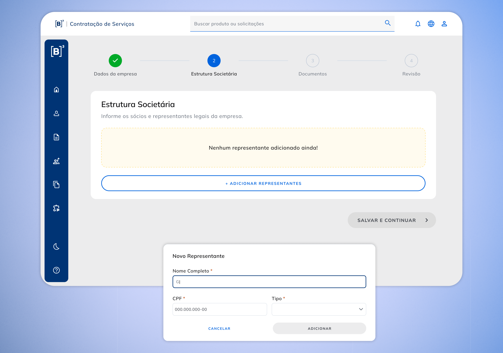
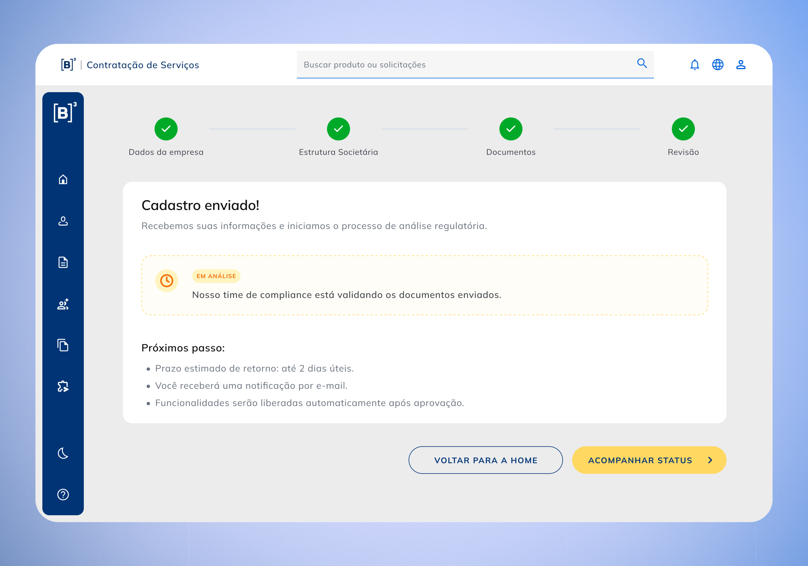

Teste A/B
Blueprint e análise de dados


Como Product Designer, atuei no diagnóstico e redesenho da jornada de cadastro de participantes:
Mesmo sem teste A/B, o MVP entregue em tempo recorde já trouxe impactos relevantes:

Trazendo clareza de status e independência para o contratante realizar o cadastro sem auxílio.
Menos etapas e maior clareza no preenchimento.

Usuários passaram a realizar o cadastro sem a dependência de terceiros ou suporte da B3.

Graças à validação de campos em tempo real conforme progride o cadastro.
Do ponto de vista do negócio, o cadastro de contratação de serviços deixou de ser gargalo e passou a sustentar ativação de clientes, escala e redução de custos de suporte de maneira autônoma.



